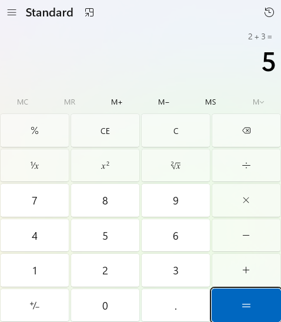
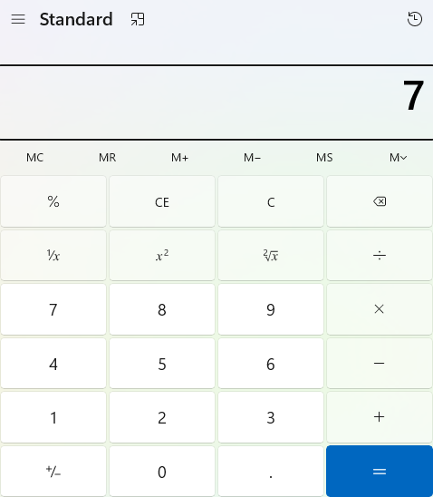

Recorded execution · passed
From an observed control to a verifiable outcome.
Explore an actual Windows Calculator run, including arithmetic, editing, unary operations and the memory lifecycle.
Open execution reportStart at requirementsMCP v0.3.1 · Windows x64 · Healing off · Screenshots privacy-cropped; no generated result images
9 / 9
Cases passed
53
Step screenshots
7 / 7
Mapped items passed
20.745 s
Recorded run duration
Observed baseline, provisional expectations. No product requirement document was supplied. UI01–UI05 are UI-derived expectations. WF01–WF02 are workflow checks. The original plan and executable suite accompany the recorded report and 53 step screenshots.
Follow the evidence
Browse the recorded cases
| Case | Scenario | Outcome | Evidence |
|---|---|---|---|
| CALC01 | Standard mode and reset | Passed | Step drill-down → |
| CALC02 | Addition | Passed | Step drill-down → |
| CALC03 | Subtraction | Passed | Step drill-down → |
| CALC04 | Multiplication | Passed | Step drill-down → |
| CALC05 | Division | Passed | Step drill-down → |
| CALC06 | Backspace | Passed | Step drill-down → |
| CALC07 | Square | Passed | Step drill-down → |
| CALC08 | Square root | Passed | Step drill-down → |
| CALC09 | Memory lifecycle | Passed | Step drill-down → |
Representative screenshots


Try it on your Windows machine
Install the pinned release and .NET 8 Windows Desktop Runtime, open one Calculator in English Standard mode, inspect the current controls and review the replay suite.
Read complete replay stepsInspect provenance and checksums
The recorded run is evidence from one environment. Passing mapped checks does not establish all Calculator requirements or guarantee execution on other versions.